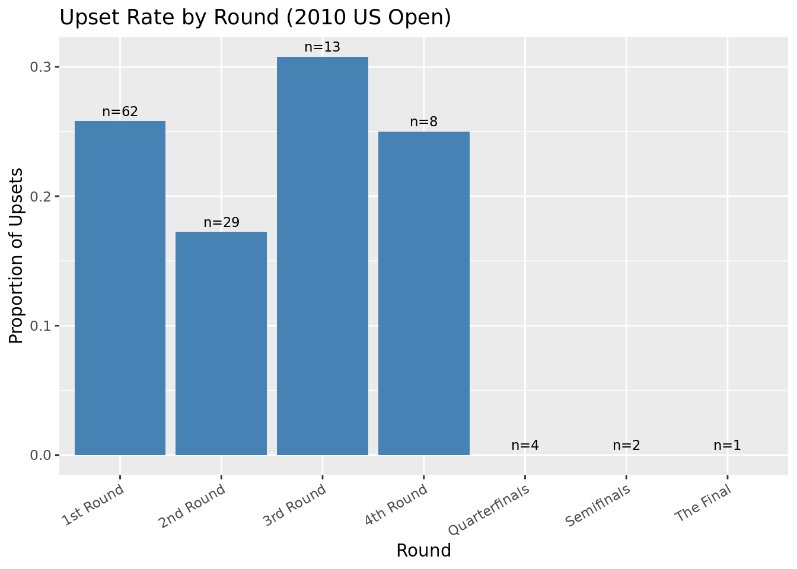

Before any analysis, you need to understand what the data looks like and prepare it for modeling.
library(dplyr)
Attaching package: 'dplyr'
The following objects are masked from 'package:stats':
filter, lag
The following objects are masked from 'package:base':
intersect, setdiff, setequal, union
library(ggplot2)usopen <-read.csv("data/usopen.csv")dim(usopen) # how many rows and columns?
[1] 127 42
head(usopen) # look at first few rows
ATP Location Tournament Date Series Court Surface Round Best.of
1 49 New York US Open 30/08/10 Grand Slam Outdoor Hard 1st Round 5
2 49 New York US Open 30/08/10 Grand Slam Outdoor Hard 1st Round 5
3 49 New York US Open 30/08/10 Grand Slam Outdoor Hard 1st Round 5
4 49 New York US Open 30/08/10 Grand Slam Outdoor Hard 1st Round 5
5 49 New York US Open 30/08/10 Grand Slam Outdoor Hard 1st Round 5
6 49 New York US Open 30/08/10 Grand Slam Outdoor Hard 1st Round 5
Winner Loser WRank LRank WPts LPts W1 L1 W2 L2 W3 L3 W4 L4 W5 L5
1 Cilic M. Marchenko I. 13 73 2855 690 7 5 6 3 6 1 NA NA NA NA
2 Davydenko N. Russell M. 6 80 4285 654 6 4 6 1 6 3 NA NA NA NA
3 Ferrero J.C. Klizan M. 24 293 1560 151 6 1 6 3 6 0 NA NA NA NA
4 Nishikori K. Korolev E. 147 69 337 715 7 6 5 2 NA NA NA NA NA NA
5 Gasquet R. Greul S. 38 84 1135 633 6 3 6 4 6 2 NA NA NA NA
6 De Bakker T. Gicquel M. 48 170 972 284 6 4 7 5 6 2 NA NA NA NA
Wsets Lsets Comment B365W B365L EXW EXL LBW LBL PSW PSL SJW SJL
1 3 0 Completed 1.12 5.50 1.17 4.65 1.14 5.00 1.18 5.71 1.20 4.00
2 3 0 Completed 1.06 8.00 1.09 6.75 1.11 6.00 1.11 8.36 1.07 7.00
3 3 0 Completed 1.14 5.00 1.18 4.50 1.14 5.00 1.19 5.49 1.13 5.50
4 1 0 Retired 1.50 2.50 1.55 2.35 1.57 2.25 1.64 2.43 1.53 2.38
5 3 0 Completed 1.12 5.50 1.15 5.00 1.17 4.50 1.20 5.38 1.20 4.00
6 3 0 Completed 1.20 4.33 1.25 3.75 1.29 3.50 1.26 4.41 1.25 3.50
MaxW MaxL AvgW AvgL
1 1.20 6.10 1.16 4.93
2 1.13 9.10 1.09 7.00
3 1.20 6.00 1.16 5.01
4 1.64 2.60 1.56 2.36
5 1.20 6.10 1.17 4.84
6 1.29 4.55 1.24 3.86
colSums(is.na(usopen)) # count missing values per column
Report: How many matches are in the dataset? Which columns have missing values? Looking at the column names, can you explain why W4, L4, W5, and L5 (set scores) are missing for most matches?
Solution:
There are 127 matches in the dataset.
W3, L3, W4, L4, W5, L5 have missing values.
W4 L4 suggests that the match ended in 3 sets, (3-0) and there isn’t a 4th set, and W5 L5 missing suggests that the match ended in 4 sets (3-1).
(b) Filter to completed matches
Eight matches ended in retirement (one player withdrew mid-match). These have incomplete outcomes and should be removed before analysis.
usopen <- usopen %>%filter(Comment =="Completed")nrow(usopen) # how many matches remain?
[1] 119
Question: Why might including retired matches distort your analysis? Think about which player is more likely to retire mid-match — the favorite or the underdog — and what that could do to your upset rate estimate.
Solution:
After filtering, 119 matches remain. I would expect the underdog to retire mid-match, probably because they are losing by a lot, and think they have no chance of coming back. The favorite might think they have a chance of comeback even if they are losing. Therefore, if we kept the retirement matches, we would have been counting them as winning instead of a possible upset, thus underestimate the true upset rate.
(c) Define the favorite and compute implied probabilities
Bookmaker odds include a built-in profit margin (the overround), so they cannot be read directly as probabilities. Use proportional normalization to convert them. The favorite is whoever has the lower (better) average odds.
usopen <- usopen %>%mutate(prob_W_raw =1/ AvgW,prob_L_raw =1/ AvgL,total_prob = prob_W_raw + prob_L_raw,prob_W = prob_W_raw / total_prob, # normalized implied prob(winner)prob_L = prob_L_raw / total_prob, # normalized implied prob(loser)fav_prob =pmax(prob_W, prob_L), # implied prob of the favoritefav_is_winner = AvgW < AvgL, # TRUE if the market favorite wonoutcome =factor(ifelse(fav_is_winner, "FavoriteWon", "Upset"),levels =c("Upset", "FavoriteWon") ) )mean(usopen$outcome =="FavoriteWon") # what proportion did the favorite win?
[1] 0.7731092
Questions: (i) What does it mean when total_prob > 1? Why does this always happen with real bookmaker odds? (ii) What proportion of matches did the market favorite win? How does this compare to the ~65% figure reported in the paper for the full dataset? Can you think of a reason the US Open might differ?
Solutions:
When we convert bookmaker odds to probabilities with 1/odds, the implied probabilities always sum to more than one. This extra probabilty is how they make profit. This always happens because bookmakers set odds so that no matter who wins, they collect more money than they pay out.
Here, the favorite won 77.3% of the matches. This is higher than the 65% reported in the paper for the full dataset. This could be because this dataset is small, all from the US Open, and there aren’t as many variations in possible upsets.
(d) Engineer features
Create two additional features you will use in the EDA and math sections.
Question: Why does the paper use a log-scale for rank differences instead of the raw difference? Think about what it means for players ranked #1 and #10 to play versus players ranked #100 and #109 — are those differences equally meaningful?
Solution:
The paper uses a log-scale rank difference because ATP rankings are not linear. For example, the #1 player is probably dramatically better than #10; while the 100th and 109th player might have similar skill sets. Therefore, the raw rank gap of 9 means very different things. By scaling to the log, the larger gaps towards the end of the ranking table is not that extreme.
Part 2: Exploratory Data Analysis
(a) Upset rate by round
usopen %>%group_by(Round) %>%summarise(upset_rate =mean(outcome =="Upset"), n =n()) %>%ggplot(aes(x = Round, y = upset_rate)) +geom_col(fill ="steelblue") +geom_text(aes(label =paste0("n=", n)), vjust =-0.5, size =3) +labs(title ="Upset Rate by Round (2010 US Open)",x ="Round", y ="Proportion of Upsets") +theme(axis.text.x =element_text(angle =30, hjust =1))

Interpret: In which rounds do upsets occur most frequently? Think about how the composition of players changes as the tournament progresses — who is left by the Semifinals and Final? Does this help explain the pattern you see?
Solution:
The 3rd round has the highest upset rate (32%), followed by the 1st round (26%). Surprisingly, the last three rounds have no upsets. This makes sense since the 3rd round is when the top seeds have beaten weaker opponents in the first two rounds, and are finally facing better-skilled, seeded opponents. The last three rounds are also when only the best players remain, when the skill difference between ranked #1 and #2 is big, and favorites dominate. However, we do have to note that we have a small sample size.